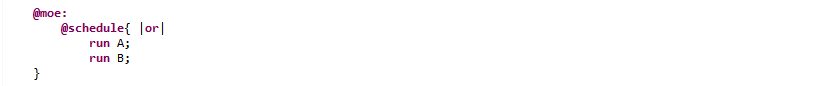

Considering 2 processes : P and Q, with weak synchronism, both processes are evaluated :
Be warned about the risk of combinatorial explosion on the number of paths.
Applying this on our most basic example, the "@moe:" section looks like :
And exploring the different paths with the symbolic engine (3, 4 and 5 evaluation steps) gives us (here the execution is simultaneous because nothing prevents it from doing so) :